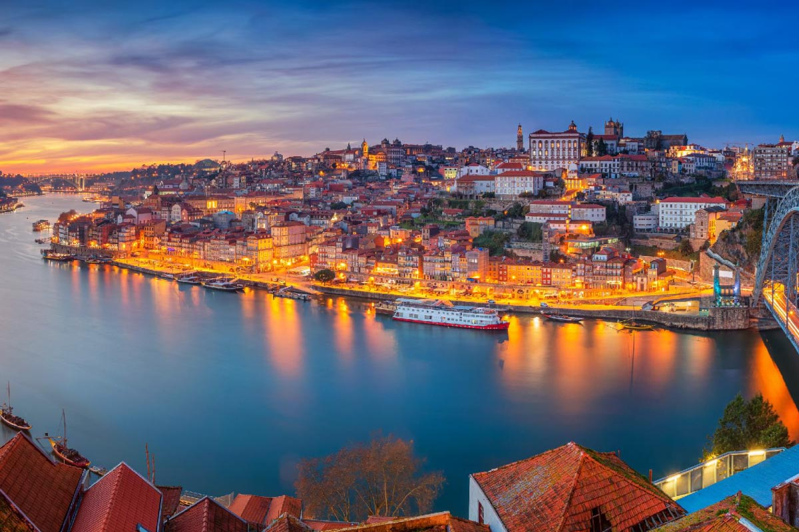

Turismo no Porto
Porto
Porto é uma cidade portuguesa e capital da sub-região da Área Metropolitana do Porto e da região Norte, pertencendo ao distrito do Porto. É sede do Município do Porto que tem uma área total de 41,42 km2, 248 769 habitantes em 2023 e uma densidade populacional de 6 006 hab./km2, subdividido em 7 freguesias. O município é limitado a norte pelos municípios de Matosinhos e Maia, a leste por Gondomar, a sul por Vila Nova de Gaia e a oeste pelo Oceano Atlântico. É a cidade que deu o nome a Portugal — desde muito cedo (c. 200 a.C.), quando se designava de Portus Cale, vindo mais tarde a tornar-se a capital do Condado Portucalense, de onde se formou Portugal.
